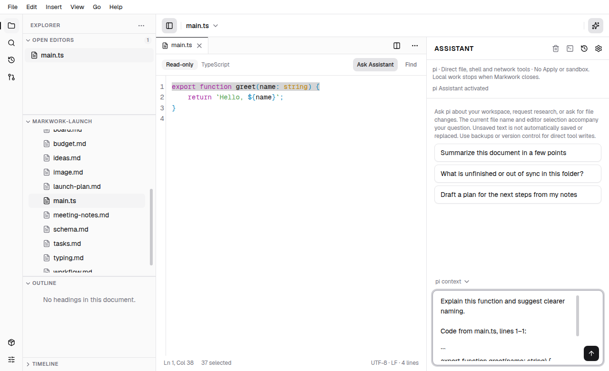

Agent
The pi Assistant
Ask about your workspace or selected code, research sources, and request changes through pi's native tools.

Open and activate
Install pi and sign in using pi in a terminal on this machine. Markwork does not require an exact pi version; pi must support the RPC commands used by the Assistant. Open a work folder, then press Ctrl+Shift+A or the Assistant button. Press Activate pi Assistant and read the notice. Opening a folder or panel alone does not call a model. Activation applies only to this workspace and window; another workspace requires its own activation.
Direct tools, no sandbox: once activated, pi may read and change files, run shell commands and access the network without individual Apply/Reject. The workspace is its working directory, not an enforced boundary. Tools may reach other files, secrets, localhost and private networks, and send content to providers or other destinations. Use trusted data, backups and version control. Stop cannot undo completed commands or guarantee termination of detached descendants.
Ask about selected code
Open a code file from Explorer and select the relevant part with the mouse or keyboard. Press Ask Assistant above the viewer. The button is disabled without a selection. The snippet, file name and line range are appended to your existing draft. Add a question, review it, then Send. Ask Assistant itself neither changes the file nor calls a provider. Code tabs remain read-only; after Send, pi's separate disk tools can change files as requested.
Editor context
The current editor file name and selected Markdown text accompany a question. A code-viewer snippet is attached explicitly through Ask Assistant. Other files are read by pi's tools from disk, not from unsaved buffers. Save or explicitly quote a draft if you need pi to see it. There is no legacy BM25 builder, @filename attachment expansion, context-size estimate or three-switch manuscript filter. The pi context popover explains native history, instructions and compaction.
Models and authentication
The gear opens settings. Authentication and defaults come from pi; the old Assistant API-key editor is gone. Available models load when a session connects. Select a configured model or change Thinking mode while idle. Native history is always retained; there is no Save-history toggle. Markwork does not copy its old DeepSeek credentials into pi. The separate read-only Git commit-message generator still uses DeepSeek and DEEPSEEK_API_KEY.
Answers and tools
Answers stream as formatted Markdown, including fenced code and tables. Tool status and the Agent log show pi activity. Copy and Log are available on answers. There is no legacy Apply/Reject/Undo, Insert into note, or one-click Retry in pi chat. To request another operation, write a new message. Enter sends; Shift+Enter adds a line. Stop cancels active local work without reversing completed effects.
File changes and drafts
Pi uses read, bash, edit and write. Clean open documents and Explorer refresh after tool activity. New/updated output discovery is bounded to 1,000 entries and eight levels and skips hidden/dependency folders and links. Dirty drafts survive external writes. A conflict blocks Save/autosave until you confirm Use disk version or Keep draft for saving in the Assistant. Save a copy first if you need both versions. Shell writes do not obey a hard editor lock.
Conversations and recovery
New conversation creates an independent native session; the clock lists only indexed pi conversations for this workspace. The newest conversation is shown on workspace open. Opening a conversation never replays its prompt or tools. Native history and checked Markdown projections live under <dataDir>/markwork/assistant-pi/<workspace-hash>/, not in the workspace. Legacy .markwork/chats files are not imported, continued, or deleted. Session deletion is not offered here.
An interrupted or failed turn requires Restore native session after activation. Restoration reads authoritative native history and repairs the projection; it does not resend anything. After an application crash, an ownership lock may require manual inspection and removal before explicit recovery. Do not delete runtime state while a process owns it.
Local lifecycle
The ordinary Assistant runs locally. Closing Markwork or switching workspace while it works asks to stop it. It does not silently continue in markworkd. For explicitly selected background execution, use an Agent Folder. Card/worktree review and confirmed merge are unchanged. Missing pi, authentication failures, interrupted sessions and rejected RPC commands produce visible errors; there is no fallback to the old engine.
Agent Folders
Agent Folders share the pi execution adapter but keep separate identities, instructions, native sessions, chat tabs, memory and optional local-Linux background execution. The workspace Assistant needs no agent.json. See Agent Folders.